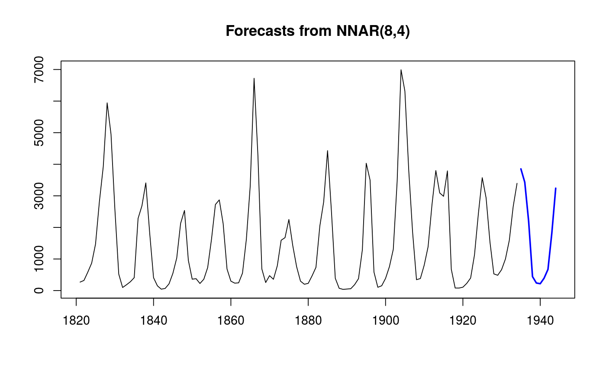
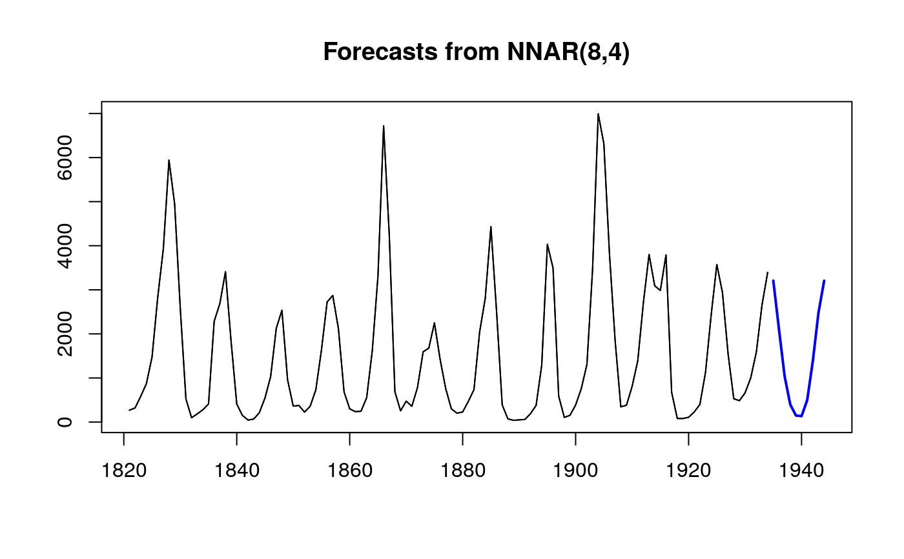
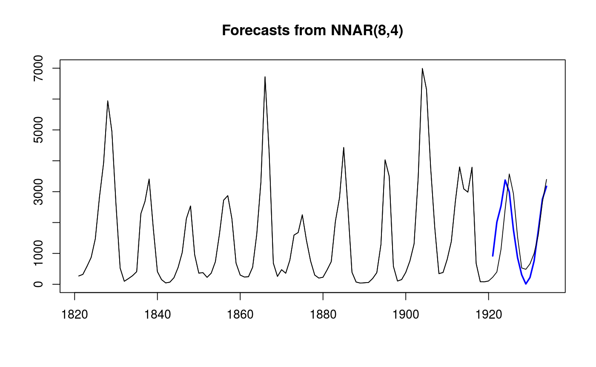

Feed-forward neural networks with a single hidden layer and lagged inputs for forecasting univariate time series.
nnetar(y, p, P = 1, size, repeats = 20, xreg = NULL, lambda = NULL, model = NULL, subset = NULL, scale.inputs = TRUE, x = y, ...)
| y | A numeric vector or time series of class |
|---|---|
| p | Embedding dimension for non-seasonal time series. Number of non-seasonal lags used as inputs. For non-seasonal time series, the default is the optimal number of lags (according to the AIC) for a linear AR(p) model. For seasonal time series, the same method is used but applied to seasonally adjusted data (from an stl decomposition). |
| P | Number of seasonal lags used as inputs. |
| size | Number of nodes in the hidden layer. Default is half of the number of input nodes (including external regressors, if given) plus 1. |
| repeats | Number of networks to fit with different random starting weights. These are then averaged when producing forecasts. |
| xreg | Optionally, a vector or matrix of external regressors, which
must have the same number of rows as |
| lambda | Box-Cox transformation parameter. |
| model | Output from a previous call to |
| subset | Optional vector specifying a subset of observations to be used
in the fit. Can be an integer index vector or a logical vector the same
length as |
| scale.inputs | If TRUE, inputs are scaled by subtracting the column
means and dividing by their respective standard deviations. If |
| x | Deprecated. Included for backwards compatibility. |
| … | Other arguments passed to |
Returns an object of class "nnetar".
The function summary is used to obtain and print a summary of the
results.
The generic accessor functions fitted.values and residuals
extract useful features of the value returned by nnetar.
A list containing information about the fitted model
The name of the forecasting method as a character string
The original time series.
The external regressors used in fitting (if given).
Residuals from the fitted model. That is x minus fitted values.
Fitted values (one-step forecasts)
Other arguments
A feed-forward neural network is fitted with lagged values of y as
inputs and a single hidden layer with size nodes. The inputs are for
lags 1 to p, and lags m to mP where
m=frequency(y). If xreg is provided, its columns are also
used as inputs. If there are missing values in y or
xreg, the corresponding rows (and any others which depend on them as
lags) are omitted from the fit. A total of repeats networks are
fitted, each with random starting weights. These are then averaged when
computing forecasts. The network is trained for one-step forecasting.
Multi-step forecasts are computed recursively.
For non-seasonal data, the fitted model is denoted as an NNAR(p,k) model, where k is the number of hidden nodes. This is analogous to an AR(p) model but with nonlinear functions. For seasonal data, the fitted model is called an NNAR(p,P,k)[m] model, which is analogous to an ARIMA(p,0,0)(P,0,0)[m] model but with nonlinear functions.
lines(lynx)## Fit model to first 100 years of lynx data fit <- nnetar(window(lynx,end=1920), decay=0.5, maxit=150) plot(forecast(fit,h=14))lines(lynx)## Apply fitted model to later data, including all optional arguments fit2 <- nnetar(window(lynx,start=1921), model=fit)